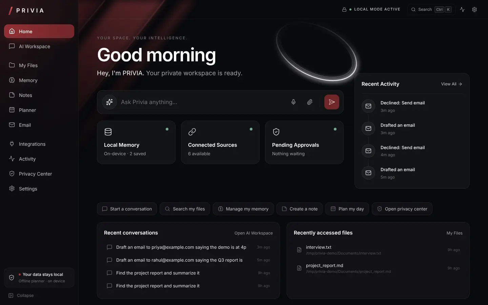
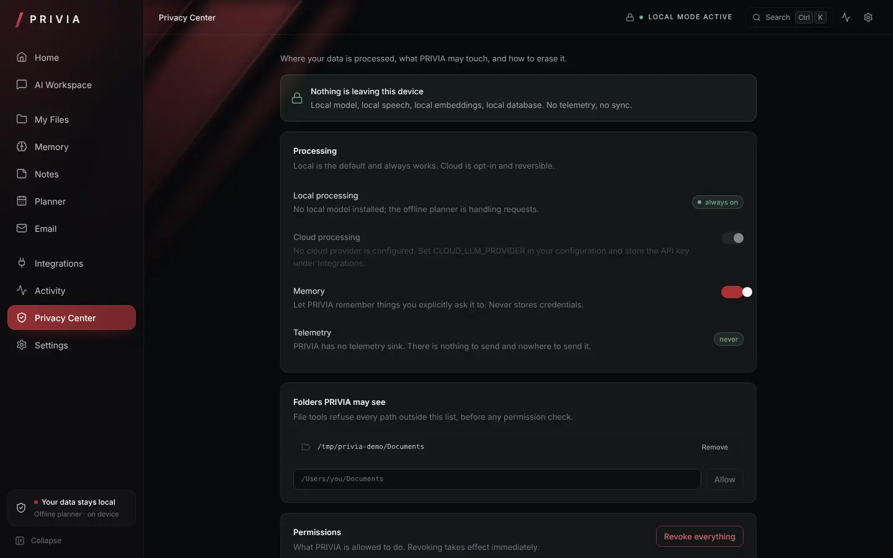

AI Workspace
Conversations with streaming replies, Markdown and code, history, and a stop button. Every reply says where it was processed.
Free · Open source · Local first
PRIVIA is a personal AI assistant that runs on your own computer. It reads only the folders you allow, asks before it acts, and shows you everything it did.

Conversations with streaming replies, Markdown and code, history, and a stop button. Every reply says where it was processed.
Search, read and summarize documents in the folders you choose. Everything else on your computer stays invisible.
PRIVIA remembers what you ask it to, shows where each memory came from, and forgets on request. It refuses to store passwords and keys.
Notes with full-text search and local summaries. A day and week planner backed by calendar files on your disk.
Draft and reply locally. Sending always shows the exact message and recipients, and waits for your approval.
A complete record of every tool call, approval and refusal, plus one place to see and change what PRIVIA can access.
The language model only proposes actions. A separate, deterministic runtime checks each one against your permissions before anything runs.

Checking the latest release…
macOS 11 or later
Windows 10 or 11, 64-bit
x86-64, glibc 2.35 or later
Every release lists SHA-256 checksums in SHA256SUMS.txt. The installers are
currently not signed with an Apple or Microsoft certificate, so your
system will warn you the first time. See the install steps below.
macOS: open the .dmg and drag PRIVIA to Applications. On first launch, if macOS blocks it, open System Settings → Privacy & Security and choose Open Anyway.
Windows: run the setup .exe. If SmartScreen appears, choose More info → Run anyway.
Linux: install the .deb or .rpm, or make the .AppImage executable and run it.
Install Ollama, then run:
ollama pull llama3.2:3bAbout 2 GB, fine with 8 GB of RAM. For better answers with 16 GB, use llama3.1:8b. Without a model, PRIVIA still works with its offline planner.
PRIVIA checks your system, finds your model, explains its permissions and lets you grant access one item at a time. Nothing is allowed until you say so.
PRIVIA is free and needs no subscription for local use. A local model runs on your own processor and memory, so speed depends on your computer. Cloud providers are optional and, if you choose one, you pay that provider with your own API key.
Not by default. Models, memory, notes, history and the audit log stay on your computer. Data leaves only if you enable a cloud provider and choose to use it, and every reply that did is labeled.
PRIVIA itself is light. The local model is the heavy part: 8 GB of RAM runs a 3B model comfortably, and 16 GB is recommended for 8B models. Apple Silicon and recent GPUs are much faster.
Its offline planner still finds and summarizes files, manages notes, memory and your calendar, and drafts email, with simpler wording.
No. Deleting, moving or overwriting files, sending email, changing events and running commands always show you the exact action and wait for your approval, every time.
The current builds are not signed with paid Apple or Microsoft certificates. You can verify a download against SHA256SUMS.txt on the release page, or build PRIVIA from source.
Remove the app the usual way for your system. PRIVIA keeps its data in the .privia folder in your home directory; delete it to remove everything, or use Privacy Center → Delete data first.